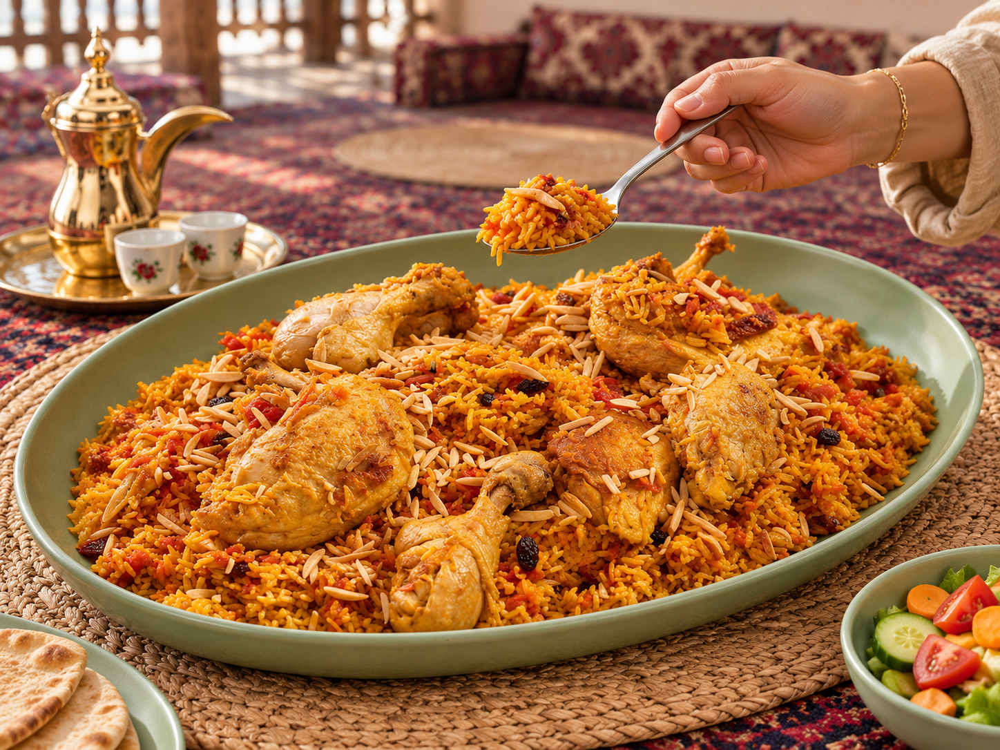

Kabsa
Kabsa is a dish that is loved by all and is one that you must try on your trip to Saudi. This dish has a strong tempting aroma that tourists can’t resist.
It is made of long-grain rice and meat which are cooked slowly together in one pot, letting the flavours get absorbed evenly.
Best Locations to Try: Almost any neighbourhood in Saudi, especially in Riyadh like Najd Village and Al Romansiah.